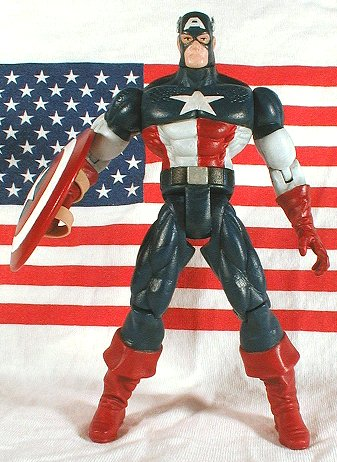

|  | Cap was made from a Electrospark Captain America and a DC Direct Hourman head. I added 1/4" to his lower and upper legs to make him a little over 6" tall, and make his legs in better proportion with his torso. I chose the Hourman head because it was clean and had a solemn expression. I used the Marvel vs. Capcom Cap ear wings. I chose darker blue and red for the costume, more in line with the true colors of old glory (they aren't quite as dark as they appear in this photo). I also repainted the Marvel vs. Capcom Captain America shield, gloss-coated it, and added rubberband straps. The picture below shows the size, color, and facial differences between this custom and the other recently released Cap figures. Notice the use of navy blue vs. baby blue, and the non-grimacing, non-anime face. |